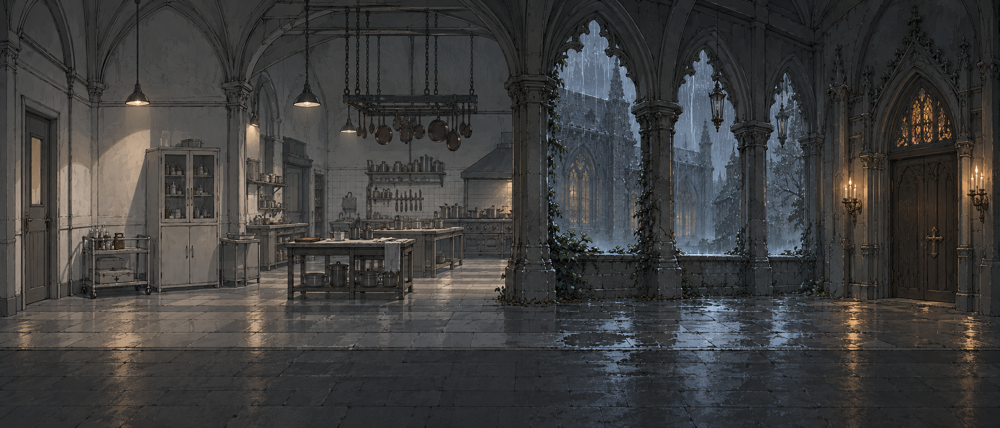
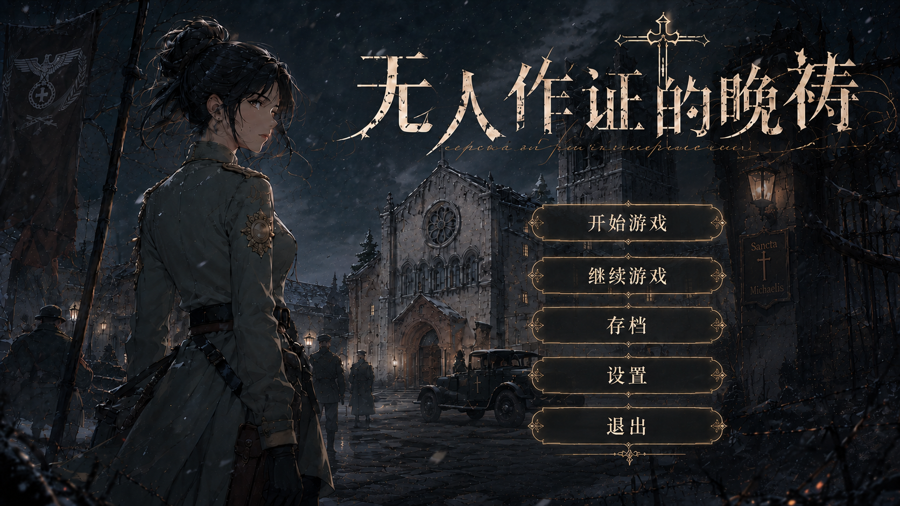

第三章 · 第七次钟声
钟声 Ⅱ / Ⅶ
前往礼拜堂侧门
第四次钟声钟声比记忆中更近
伊蕾娜
◆

第三章 · 可玩片段
无人作证的晚祷
第七次钟声
WASD / 方向键移动 Shift 跑步 E 调查 点击 / 空格继续
约 6—8 分钟 · 选择会影响调查方式与答案


第三章 · 可玩片段
WASD / 方向键移动 Shift 跑步 E 调查 点击 / 空格继续
约 6—8 分钟 · 选择会影响调查方式与答案